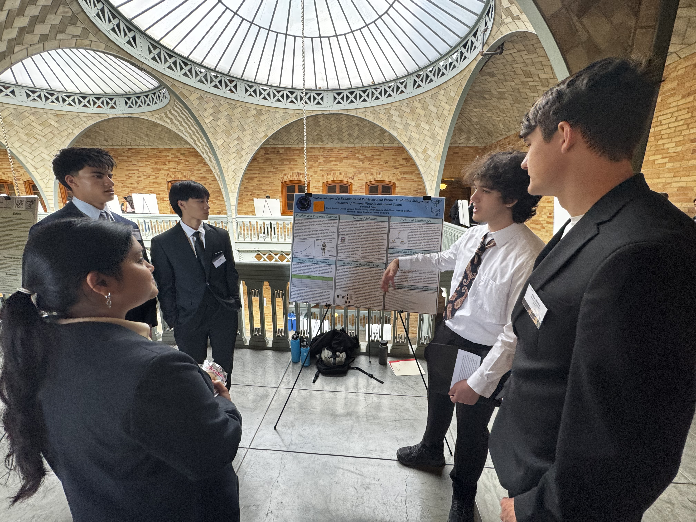
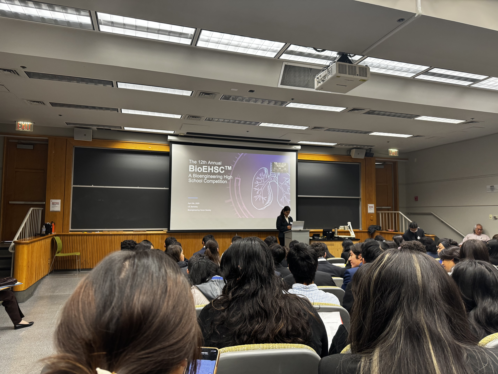
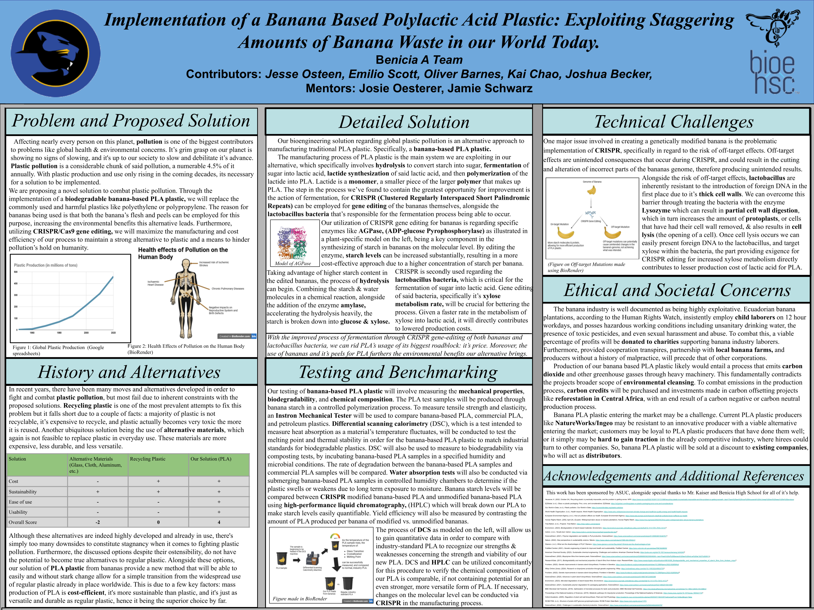
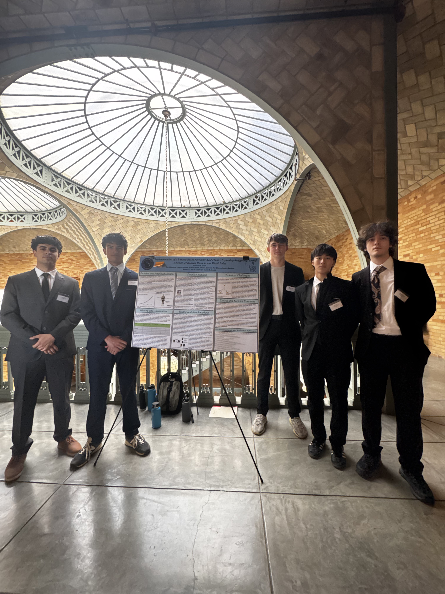

UC Berkeley BioEngineering High School Competition
The BioEHSC competition is an 8 week long engineering competition that delves into the topic of team research and design competition for high schoolers. The competition is hosted at UC Berkeley and students are given the liberty to choose any topic within the bounds of either biological or biomedical engineering.
Our group's project in particular was researching the possibility of utilizing CRISPR technology with bananas & bacteria in order to produce an environmentally friendly & cheaper alternatives to already existing PLA in the market today.
Over the course of the 8 weeks, there were a key few milestones in the project that marked the completion of several items: An informative video, a written abstract, a research poster, and an academic slideshow pertaining to our topic.
I had a large part in every part we worked on, I had edited the video alongside proofreading most the script we had used. A lot of the images we had used on our poster & slideshow I had created using BioRender and the pre-made models on the website.
Links to our work:
Written Abstract
Informative Video
Research Poster
Academic Slideshow
Reflecting on our experience in the couple of months working on this project, I strongly encourage all people considering starting this project to do it, and give it your best. I learned so much about our topic in general, alongside the research process that's going to be necessary in college. I really feel I got a headstart on this process and it will most likely come easier to me in the future. Some of the main biological engineering topics we discussed and learned about were: processes of manufacturing biomass, utilizing CRISPR & Cas9 gene editing, and how to theoretically experiment with a multitude of bacterias.
We also performed well in the competition aspect; our judges all seemed impressed with our depth of knowledge on the topic. I think one of the biggest parts were we were able to answer their questions and expand even more upon them, even being able to elaborate so much that we had to stop due to time constraints.



